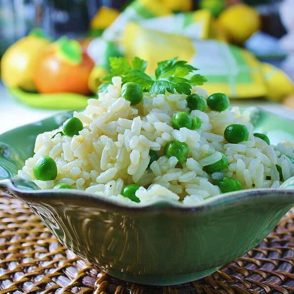

Jasmine Rice

Description
This pilaf is made with jasmine rice, an aromatic rice popular in Thai cuisine.
Ingredients
- 2 tablespoons olive oil
- 2 tablespoons chopped onion
- ¼ cup green peas
- 1 bay leaf
- 1 ½ cups dry jasmine rice
- 3 cups water
- salt to taste
Steps
-
In a large saucepan over a medium-low heat, warm the oil.
Add onion and saute for 3 to 5 minutes. Mix in green peas,
bay leaf, and jasmine rice. Stir to coat the rice.
-
Pour 3 cups water into the saucepan and add the salt. Increase
the heat to medium and let the rice come to a quick simmer.
Reduce heat to low and let rice simmer lightly and sit uncovered
until all of the liquid is absorbed. Cover the rice and remove
from heat. Let sit for about 40 minutes.